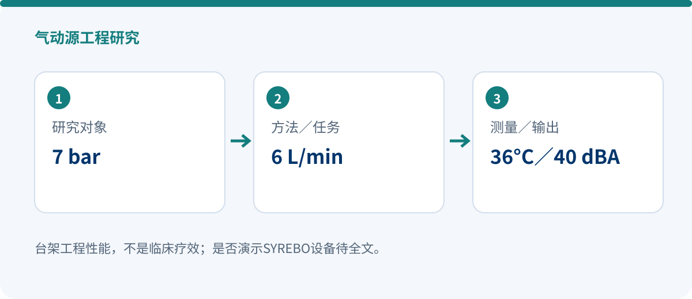

气动源工程研究 · 2026
无电子元件的化学反应气动源：7 bar、6 L/min、36°C与40 dBA
气动源工程研究
Low-Heat and Near-Silent Pneumatic Source Driven by Integrated Endothermic–Exothermic Chemical Reactions for Soft Robots
Ung Heo, Junhwan Choi, Sangjoon J. Kim, Jung Kim
Soft Robotics, OnlineFirst
DOI: 10.1177/21695172261442062 · 原始出处
证据范围：SAGE原始摘要已核实性能参数；是否实际演示SYREBO设备及具体型号仍需全文，当前不按已确认SYREBO直接工程证据计数。
化学反应气动源｜近静音｜低热
一句话结论：研究提出一种集成吸热—放热化学反应的气动源，不依赖电子元件，并通过被动机械部件自动调节反应。摘要报告稳态输出7 bar、6 L/min，最高温度36°C、噪声40 dBA。它解决的是软体机器人供能问题，不是患者疗效问题。

研究设计
系统利用磷酸与碳酸氢铯之间的反应产生气体，并集成吸热—放热过程来控制热表现。被动机械部件根据系统状态自动调节反应，无需电子控制元件。
这一工程路径面向软体机器人的便携、低噪声与低热供能需求。研究评价对象是气动源输出与热声特性，而非手功能、日常生活能力或卒中恢复。
7 bar稳态输出压力
6 L/min稳态流量
36°C／40 dBA最高温度／噪声
核心结果
- 稳态输出压力达到7 bar，流量达到6 L/min。
- 最高温度36°C，噪声40 dBA，支持“低热、近静音”的工程定位。
- 这些数值是气动源台架性能，不应转换为临床安全性或疗效承诺。
这项研究增加了什么信息？
对软体康复设备而言，泵与气源的体积、噪声、热量和控制复杂度会直接影响使用场景。该研究提供了无电子元件的替代思路，但其与具体SYREBO产品的关系必须以全文设备演示或方法学记录为准。
研究边界：必须与结果一起阅读
- 气动源工程研究，不包含患者临床疗效结论。
- 台架输出不等于整机在临床环境中的安全、可靠或有效。
- 全文待取得：是否演示SYREBO及具体型号暂未核实，不作品牌关联推定。
合规表述建议：研究提出一种集成吸热—放热化学反应的气动源，不依赖电子元件，并通过被动机械部件自动调节反应。摘要报告稳态输出7 bar、6 L/min，最高温度36°C、噪声40 dBA。它解决的是软体机器人供能问题，不是患者疗效问题。
文章来源与核验范围
Ung Heo, Junhwan Choi, Sangjoon J. Kim, Jung Kim. Low-Heat and Near-Silent Pneumatic Source Driven by Integrated Endothermic–Exothermic Chemical Reactions for Soft Robots. Soft Robotics, OnlineFirst (2026). DOI: 10.1177/21695172261442062.
设备名称、样本口径与数值结果均按上述已核实来源范围呈现；未取得的字段不作推断。
设备名称、样本口径与数值结果均按上述已核实来源范围呈现；未取得的字段不作推断。
本文为研究解读，不构成医疗建议。具体训练方案请在医生或治疗师指导下制定。